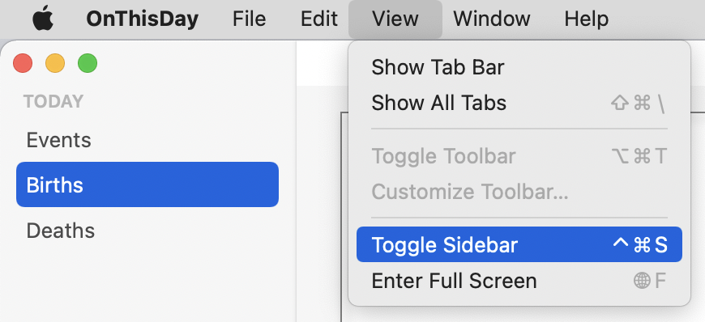
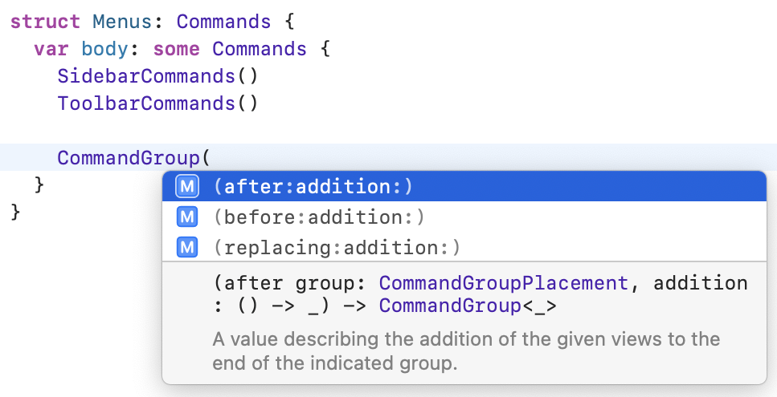
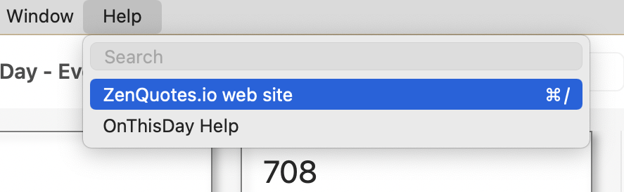
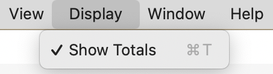
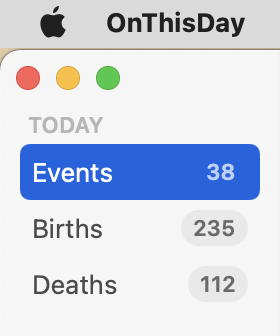
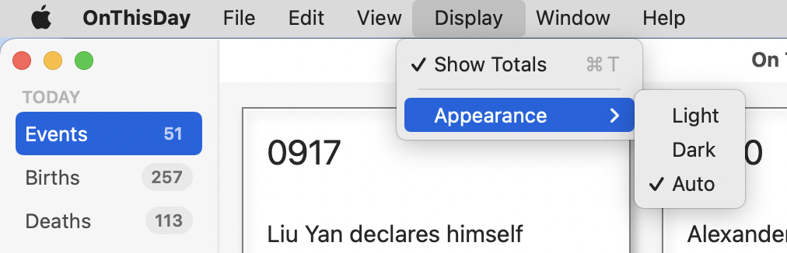

3 Adding Menus & Toolbars¶
In Chapter 2, “Working With Windows”, you built a macOS app with support for multiple windows, a sidebar and a details pane. You connected it to the API using the data models you designed in the first chapter.
Now it’s time to take another step towards a real Mac app by adding menus and toolbars. Mac users expect to be able to perform nearly every function in the app via a menu, preferably with a keyboard shortcut. Toolbars allow easy access to more window-specific controls.
You’re going to continue with the app you built in the last chapter and learn how to add menus and different types of menu items, as well as how to add a toolbar to the windows.
What Is a Menu?¶
Menu is the term applied to any user interface element that expands to show a selection of choices, but the implementation of a menu is very platform dependent. In SwiftUI for macOS, there are three ways to show a menu:
- With a
Menuview, which allows you to insert a clickable menu anywhere in your app’s user interface. - Using
contextMenuto pop up a menu when a user right-clicks another UI element. - Via the Mac’s system-wide menu bar.
While the first two options will look different on a Mac than in an iOS app, using them is no different. But the third option, the fixed menu bar that appears at the top of your Mac’s screen, has no iOS equivalent. It contains a standard set of menus and menu items that appear in almost all apps, and they follow a keyboard shortcut convention that users come to know. In this chapter, you’ll learn about customizing the Mac menu bar for your app by adding app-specific menus and menu items.
Setting up Menu Commands¶
Open your project from the last chapter or download the materials for this chapter and open the starter project.
Your app already has a default set of menus, but to change these, you need to add a commands modifier to the WindowGroup in OnThisDayApp.swift. You can insert all your menu code there, but it makes for more maintainable code if you take it out into its own file.
Create a new Swift file — not a SwiftUI View file — called Menus.swift and add this to it:
// 1
import SwiftUI
// 2
struct Menus: Commands {
var body: some Commands {
// 3
EmptyCommands()
}
}
What’s all this?
Commandsis a SwiftUI protocol, so you need to import SwiftUI.- Both
Menusand itsbodymust conform toCommandsso that SwiftUI recognizes them as menus and menu items. - Because
bodyhas to return something, you use one of the pre-built menu sets — in this case, one that does nothing.
Next, you need to connect Menus to your app’s WindowGroup. In OnThisDayApp.swift, add this modifier to WindowGroup:
.commands {
Menus()
}
This tells SwiftUI to attach your new Menus to the menu bar. As you add to Menus, this will apply the new menus and menu items automatically, but OnThisDayApp.swift remains uncluttered and easy to read.
Using Pre-built Menu Groups¶
One of the easiest ways to add menu items is to include some of the pre-built menu groups Apple has supplied. Not all apps need all these groups, but this method allows you to insert consistent groups of menu items if they’re relevant.
You’ve already added and tested EmptyCommands but here are the others you can include, which you’ll probably find slightly more useful. :]
- SidebarCommands
- ToolbarCommands
- TextEditingCommands
- TextFormattingCommands
- ImportFromDevicesCommands
Note
Check out Xcode’s documentation for CommandGroup and scroll to Standard Command Groups to check if Apple has added any more.
This app doesn’t have any text editing and won’t need to import any photos or scans from nearby iOS devices, so you can ignore those choices. But, it does have a sidebar and will have a toolbar, so the first two look useful.
Why does EmptyCommands exist? Imagine you were building a menu based on some condition and you only wanted your menu to appear in certain circumstances. Since body must return something, you can use this to effectively return nothing. In ordinary SwiftUI views, you use EmptyView for the same purpose.
In Menus.swift, replace EmptyCommands() with:
SidebarCommands()
Build and run the app.
Remember in the last chapter you found that it was possible to hide the sidebar but impossible to retrieve it? The View menu now contains a Hide/Show Sidebar menu item:

Drag the vertical divider to hide the sidebar and then use this menu item to show it again. Try out the keyboard shortcut — Control-Command-S — to toggle the sidebar in and out.
You don’t have a toolbar yet, but in preparation, add the following on the next line after SidebarCommands():
ToolbarCommands()
Unlike with SwiftUI views, you don’t need to wrap sets of commands in a container.
Build and run now, and you’ll see the View menu has got another new group of items. Since you don’t have a toolbar yet, your app has disabled them automatically, but they’re ready for when you add the toolbar:

With these pre-built command groups, the system decides where to put them, and you can’t adjust that. But, you don’t have to worry about connecting them to actions, setting keyboard shortcuts or localizing them. And they’ll always follow Apple’s guidelines, so you should prefer using these over building your own, if they’re appropriate to your app.
Inserting a Menu Item¶
Now that you know how to apply a pre-built set of menu items, it’s time to look into adding your own menu item to an existing menu. For this, you’re going to add a link to the API site in the Help menu.
To add menu items, you wrap them in a CommandGroup. This is similar to the pre-built menu commands; each of them is also a CommandGroup.
When you initialize a CommandGroup, you must tell it where to put its items. In Menus.swift, underneath ToolbarCommands, type CommandGroup(. After you’ve typed the opening parenthesis, you’ll see the auto-complete suggestions showing your three options:

As you can see, you get to place your group after, before or replacing something of type CommandGroupPlacement. If you look up the documentation for CommandGroupPlacement, you’ll see a list of placements for standard menu items that you can use to position your new items.
Since you want to place your new item in the Help menu, positioning it before the help CommandGroupPlacement, looks like the way to go.
Replace your half-typed CommandGroup line with:
CommandGroup(before: .help) {
}
Now you have your own CommandGroup but what are you going to put into it? A SwiftUI view! There are several view types that you can use, but the most common is a Button.
Put this code inside your CommandGroup:
// 1
Button("ZenQuotes.io web site") {
// 2
showAPIWebSite()
}
// 3
.keyboardShortcut("/", modifiers: .command)
Stepping through these lines:
- Create a
Buttonwith a title. - Add an action that will call a method.
- Assign a keyboard shortcut.
This causes an error because you haven’t defined showAPIWebSite() yet, so insert this method into Menus after body:
func showAPIWebSite() {
// 1
let address = "https://today.zenquotes.io"
guard let url = URL(string: address) else {
fatalError("Invalid address")
}
// 2
NSWorkspace.shared.open(url)
}
Some of this will be familiar but the last line may be new to you:
- Try to create a URL from the ZenQuotes.io web address. If this fails, it’ll be due to an error when typing the address, so catch it during development with a
fatalError. NSWorkspaceis anAppKitclass that gives access to other apps and system services. Each app automatically gets a shared instance ofNSWorkspaceit can use. Itsopenmethod will open a supplied URL in the system’s default app for that URL type. In this case, it’ll be the default browser.
Build and run the app and open the Help menu to see your new menu item. Select it to open the URL in your browser. Go back to your app and press Command-/ to return to the page in your browser via the keyboard shortcut.

You’ve only added one control to this new CommandGroup but you could have added up to ten.
Creating a New Menu¶
To insert a menu item, you used CommandGroup but to add a completely new menu, you’ll use CommandMenu. Within your CommandMenu you can add views for the menu items, arranged as you like, but you can’t set the position of your menu in the menu bar.
You’re going to add a Display menu that controls various aspects of the app’s appearance. Inside Menus.swift, add this to body after your CommandGroup:
CommandMenu("Display") {
// display menu items go here
}
Build and run and you’ll see a Display menu between the View and Window menus, but since it has no menu items yet, it’s a bit boring.
When you added the menu item to the Help menu, you used a Button. That’s going to be the most common view type for a menu item, but you can use others. One that works particularly well is Toggle. You’ve probably seen menu items in other apps that have a check mark beside them that gets turned off and on as you select the menu item — look in Xcode’s Editor menu for some examples. This is a perfect use case for a Toggle.
Before you can set up a Toggle view, you need a property to bind to it. In this case, you’re going to add a setting that shows or hides the number of each type of event in the sidebar. And since you want this setting to persist between app launches, you’re going to use @AppStorage.
Saving App Settings¶
If you’ve already used @AppStorage, then you can skip this section, but for those who haven’t encountered it before, @AppStorage is a property wrapper that gives easy access to UserDefaults.
Every app, in both macOS and iOS, stores its internal settings in UserDefaults. For a macOS app, this is things like window sizes and positions, sidebar visibility and width, toolbar settings and so on. You can use this system to store small chunks of data like preferences, but working with UserDefaults is not easy. You have to manually read and write the data. You must provide default settings for when the user hasn’t made any choices. And you have to try to keep the display in sync with the settings.
With SwiftUI and @AppStorage, this becomes much simpler. You initialize a property using the @AppStorage property wrapper, giving it a default value. SwiftUI will handle saving and retrieving its value and, whenever the value changes, your views will automatically update to match.
You can only store certain data types in @AppStorage — Int, Bool, String, Float, Double, Data, or URL — but this covers many possibilities. You can also store enumeration values if they conform to one of these types.
Adding a Toggle¶
In Menus.swift, outside body but inside the struct, insert this:
@AppStorage("showTotals") var showTotals = true
This line does a lot of work! It declares a Boolean property called showTotals and sets it to true by default. It wraps this property in the @AppStorage property wrapper, assigning it the UserDefaults key of showTotals.
Now that you have a property, you can add your Toggle. Replace // display menu items go here with this:
// 1
Toggle(isOn: $showTotals) {
// 2
Text("Show Totals")
}
// 3
.keyboardShortcut("t", modifiers: .command)
// more menu items go here
What does this snippet do?
- Insert a
Toggleview with itsisOnvalue bound toshowTotals. - Give the
Togglea text label. - Add a keyboard shortcut of Command-T.
You can set your shortcuts using uppercase or lowercase letters. The menus will always show them in uppercase, but you don’t need to hold down Shift to trigger them.
SwiftUI won’t let you overwrite a standard shortcut. If you try to use something like Command-C, the menu won’t show it or respond to it. If you apply your own shortcut to more than one menu item, they’ll all appear but only one of them will work.
If you want to use more than one modifier in your keyboard shortcut, you supply an array of them, like this:
.keyboardShortcut("t", modifiers: [.command, .shift, .option])
And if you want every possible modifier — Shift-Command-Option-Control — you can use .all.
Build and run the app and admire your new Display menu. Pop it down and confirm that the toggle has checked Show Totals:

Select the menu item either with your mouse pointer or with Command-T. Check the menu again and confirm that Show Totals is now unchecked. Quit the app, restart it and you’ll see that the menu item is still unchecked because the @AppStorage property wrapper saved it.
You’re editing and storing this setting, but it isn’t changing any part of your app’s display yet. To fix this, go to SidebarView.swift and add these declarations:
@EnvironmentObject var appState: AppState
@AppStorage("showTotals") var showTotals = true
SidebarView can now access appState and showTotals. It may seem wrong to declare showTotals more than once, but you’re only declaring a link to the value in the user’s settings.
With these in place, add this modifier to the Text view inside the ForEach:
.badge(
showTotals
? appState.countFor(eventType: type)
: 0)
badge attaches a number to the rows in a list. If the number is set to zero, no badge appears. This code uses the ternary operator to check showTotals. If it’s true, this queries appState for the count for the current event type. If it’s false, set the number to zero.
Build and run the app. Toggle the Show Totals menu item and see the numbers in the sidebar hide and show:

The SidebarView preview is not going to work any more because it doesn’t have access to the @EnvironmentObject. Using AppState in a preview may hit the API usage limits, so delete SidebarView_Previews now.
Using a Picker¶
You’ve used a Button and a Toggle in your menus, but another SwiftUI view that can be useful as a menu item is a Picker. As is the case with all SwiftUI views, the system will customize the appearance of the view to suit its purpose, so a Picker in a menu isn’t going to look like a Picker in a window. It’ll have a menu item that pops out a submenu showing the possible options. The selected option in the submenu will have a checkmark beside it.
Like iOS devices, Macs support light and dark mode as well as an automatic mode which swaps between the two depending on the time of day. If you do nothing, your app will go along with the user’s choice made in System Preferences ▸ General but it’s also a good idea to give your users a per-app choice for this.
Setting up DisplayMode¶
Before you can add a way to set the display mode for your app, you need to set up an enumeration to hold the options and a method to change the app’s appearance.
In the Models group, create a new Swift file called DisplayMode.swift and replace its code with this:
// 1
import SwiftUI
// 2
enum DisplayMode: String, CaseIterable {
// 3
case light = "Light"
case dark = "Dark"
case auto = "Auto"
}
Going through this:
- Import the SwiftUI library because this enumeration is going to use
@AppStorage. - Set the enumeration’s
rawValuetype toStringand mark it asCaseIterableso you can loop over the cases. - List the three options, with the raw values set to what will appear in the menu.
That sets up the enumeration itself, but now you need a way to change the appearance of your app and this requires a dip into AppKit. Just like iOS apps can use SwiftUI, UIKit or a mixture of the two, macOS apps can use SwiftUI and AppKit.
Add this method to the enumeration:
// 1
static func changeDisplayMode(to mode: DisplayMode) {
// 2
@AppStorage("displayMode") var displayMode = DisplayMode.auto
// 3
displayMode = mode
// 4
switch mode {
case .light:
// 5
NSApp.appearance = NSAppearance(named: .aqua)
case .dark:
NSApp.appearance = NSAppearance(named: .darkAqua)
case .auto:
// 6
NSApp.appearance = nil
}
}
There’s quite a lot happening here:
- This is a static method, so it’s a method on the enumeration itself, not on any of its cases.
- Use
@AppStoragefor the selected value. - Store the new setting.
- Use
switchto work out which mode the user selected. NSAppis shorthand forNSApplication.shared, and likeUIApplication.shared, gives access to the running application.appearanceis the app property that dictates the appearance of the app’s windows. There are two main appearance names:aquafor light mode anddarkAquafor dark mode.- If you set the app’s appearance to
nil, it uses whatever you selected in System Preferences.
Applying the Display Mode¶
When the app first starts and whenever this setting changes, you need to call DisplayMode.changeDisplayMode(to:) to apply the selection. Since this must happen as the app boots, putting it in OnThisDayApp.swift is a good idea.
First, add the @AppStorage definition at the top of OnThisDayApp:
@AppStorage("displayMode") var displayMode = DisplayMode.auto
Next, apply these two modifiers to ContentView, after its environmentObjectmodifier:
// 1
.onAppear {
DisplayMode.changeDisplayMode(to: displayMode)
}
// 2
.onChange(of: displayMode) { newValue in
DisplayMode.changeDisplayMode(to: newValue)
}
These cover the use cases discussed:
- When the app first starts, check the stored setting for
displayModeand apply it to the app. - Whenever
displayModechanges, apply the new setting.
Expanding the Menu¶
Finally, you have everything set up so that you can add this to the menu.
In Menus.swift, add the stored property to Menus:
@AppStorage("displayMode") var displayMode = DisplayMode.auto
Next, replace // more menu items go here with this:
// 1
Divider()
// 2
Picker("Appearance", selection: $displayMode) {
// 3
ForEach(DisplayMode.allCases, id: \.self) {
// 4
Text($0.rawValue)
.tag($0)
}
}
There’s quite a lot going on here, but taking it bit by bit:
- Use
Dividerto get a menu separator. It’s not really necessary in this very short menu, but you need to get in the habit of breaking up long menus into related groups. - Add a
Pickerwith a title and with its selection bound to the@AppStorageproperty. - Set the contents of the picker by looping through the cases in
DisplayMode. - For each item, use its
rawValueas the title and its actual value as the tag.displayModeis set to the tag when the user selects an option.
Build and run the app to see the results of your hard work:

Change the settings and see your windows all change to match. Choose a different setting to your usual, quit the app and restart it to confirm that your app has saved and re-applied your selection.
Other Possibilities¶
You’ve just used a Picker to add a sub-menu. The advantage of this is that it gives you the checkmark showing the selected option. The disadvantage is that it doesn’t allow for keyboard shortcuts. So what else could you have used?
A set of three buttons would allow for keyboard shortcuts, but not the checkmark. You could have set each option up like this:
Button("Light") {
displayMode = .light
}
.keyboardShortcut("L", modifiers: .command)
These would appear in the main Display menu by default, but you can group items into a sub-menu like this:
Menu("Appearance") {
Button("Light") {
displayMode = .light
}
.keyboardShortcut("L", modifiers: .command)
// other buttons here
}
You can see a sample implementation of this commented out in Menus.swift in the finaland challenge project folders.
None of these options is wrong; it depends on the app and the menu items. In this case, it’s easy to confuse the auto display mode with whatever would be valid at this time of day, so the checkmark is more valuable than the keyboard shortcuts. But you now have the knowledge to apply whatever type of menu and menu items your app requires.
Adding a Toolbar¶
So far in this chapter, you’ve concentrated on the menu bar and added app-wide controls. For user interface elements at the window level, macOS apps use a toolbar, so adding that is your next task.
If you’re familiar with toolbars in iOS apps, you’ll see they’re set up much the same in macOS apps, but they’re more common in the latter. macOS always puts toolbars at the top of the window, and you’ll see some different options for positioning toolbar items.
You applied your menus to the main app WindowGroup but you’ll attach the toolbar to a window’s view. In ContentView.swift, add this after the navigationTitle modifier:
.toolbar {
// toolbar items go here
}
This sets ContentView up to have a toolbar, but there’s nothing in it yet. Like you did with the menus, you’re going to add a new file to hold the toolbar content. And like you did with the views, you’re going to make a new group in the Project navigator to hold this sort of file.
Select Menus.swift in the Project navigator, right-click and choose New Group from Selection. Call the new group Controls and then add a new Swift file to that group, naming it Toolbar.swift.

Replace the contents of your new file with:
// 1
import SwiftUI
// 2
struct Toolbar: ToolbarContent {
var body: some ToolbarContent {
// 3
ToolbarItem(placement: .navigation) {
// 4
Button {
// button action
} label: {
// 5
Image(systemName: "sidebar.left")
}
// 6
.help("Toggle Sidebar")
}
}
}
How does this make a toolbar?
- Import the SwiftUI library to support toolbars.
- Conform both
ToolbarandbodytoToolbarContentto mark them as usable in a toolbar. - Add a
ToolbarItem, placing it in thenavigationposition. - Inside the
ToolbarItemcreate a button. - Use an SF Symbol as the icon for the button.
- Add a tooltip and accessibility description to the button.
To make this content appear, go back to where you added the toolbar modifier to ContentView in ContentView.swift and replace the comment with:
Toolbar()
Build and run the app so that you can admire your new toolbar even though it doesn’t do anything yet:

Check out the View menu. The Toggle Toolbar item is now enabled and functional.
When adding items to a toolbar, you can use ToolbarItem or ToolbarItemGroup. As you would expect, ToolbarItemGroup is for when you want to add a related set of controls. Most of the controls you add will be buttons, but you can use pickers, sliders, toggles, menus, even text fields.
Positioning an item uses ToolbarItemPlacement. These vary between operating systems, but here are the main ones you’re likely to use in a Mac app:
navigationputs the item at the leading edge, before the window title.principalshows the item in the center of the window.primaryActionpushes the item to the trailing edge.automaticlets the system work out the best position.
Now that you have a button in your toolbar, you’ll want to add an action. As you’ve probably guessed, this will provide a second mechanism for handling the sidebar problem.
Add this method to Toolbar in Toolbar.swift:
func toggleSidebar() {
// 1
NSApp.keyWindow?
// 2
.contentViewController?
// 3
.tryToPerform(
// 4
#selector(NSSplitViewController.toggleSidebar(_:)),
with: nil)
}
This looks weird! What’s it doing? SwiftUI doesn’t have a method for handling the sidebar, so you need to use AppKit again.
NSApp.keyWindowgets the frontmost window in the application.- If that works,
contentViewControllergets the view controller for the content in that window. - Once you have a view controller, you can try to call a method on it.
- SwiftUI’s
NavigationViewis basically an AppKitNSSplitViewController, and that controller has a method to toggle the sidebar.
So this isn’t a pretty method, but it demonstrates how SwiftUI is an overlay on top of AppKit and that you can dig down into AppKit if you need to.
In body set the button’s action to:
toggleSidebar()
Now you can build and run the app and use this toolbar button to toggle the sidebar:

Searching the Grid¶
You’ve added an item to the toolbar manually, and you’ll add more in the next chapter, but there is another toolbar feature that SwiftUI can add automatically. Wouldn’t it be useful to be able to search the events and show only a subset of cards in the grid?
Adding search functionality to a SwiftUI view has become much easier in macOS 12 and iOS 15.
In ContentView.swift, add this property to hold any text that a user enters into the search field:
@State private var searchText = ""
Next, add a searchable modifier to NavigationView after the toolbar modifier. The modifier’s text is bound to the property you just created:
.searchable(text: $searchText)
Finally, replace the events computed property with this one which passes the search string over to appState:
var events: [Event] {
appState.dataFor(eventType: eventType, searchText: searchText)
}
And that’s all you need to do! The searchable modifier adds a search text field to the toolbar, bound to your searchText property. If appState.dataFor() gets a string in its optional searchText parameter, it uses this to limit the events returned. If your app didn’t already have a toolbar, this would add one for you.
Build and run the app and type something into your new search field:

Open a second window and search for something different. Change the event type and the search automatically applies to the new set of events.
Making Your Toolbar Customizable¶
You may have noticed that the View menu has an item called Customize Toolbar…, but it’s not active. You’re going to learn how to activate it, but right now, there is a bug in SwiftUI so that if you put a search field in your toolbar, any edits you make to the toolbar items don’t stick. Hopefully, Apple will have fixed this bug by the time you read this book, but if not, file this information away for future reference.
To make a toolbar editable, the toolbar itself and each ToolbarItem must have an idproperty.
In ContentView.swift replace the toolbar modifier with this, ignoring the error that it will cause:
.toolbar(id: "mainToolbar") {
Toolbar()
}
Next, open Toolbar.swift and replace your existing ToolbarItem with:
// 1
ToolbarItem(
id: "toggleSidebar",
placement: .navigation,
showsByDefault: true
) {
// 2
Button {
toggleSidebar()
} label: {
// 3
Label("Toggle Sidebar", systemImage: "sidebar.left")
}
.help("Toggle Sidebar")
}
What’s changed?
- Define an
idfor theToolbarItemand set it to show by default. The placement is the same as before. - Include the same
Buttonwith the same action and tooltip. - Instead of using an
Image, use aLabelbecause one of the toolbar customizations is to decide whether to show the icon, the name or both.
One more change to make: Toolbar and its body conform to ToolbarContent, but now you need to change that to CustomizableToolbarContent. Edit the structure so it starts like this:
struct Toolbar: CustomizableToolbarContent {
var body: some CustomizableToolbarContent {
This fixes the error in ContentView.swift. Build and run the app, choose Customize Toolbar… from the View menu or by right-clicking in the toolbar and try making some changes:

You can change whether the items show their icons, text or both using the popup menu at the bottom of the sheet. You can drag the default items into the toolbar. If you drag either item out of the toolbar to remove it, it disappears in a cloud of smoke, but as soon as you click Done, it pops it straight back into place.
To confirm that this is a bug due to searchable, comment out the searchablemodifier in ContentView.swift and try again. This time you’ll be able to remove the Toggle Sidebar toolbar item. Don’t forget to uncomment searchable when you’ve finished.
You still won’t be able to adjust its position because you set that specifically to navigation, but if you had more than one item and you used automatic placement, you’d be able to switch them around.
One final point: To make a toolbar customizable, every item in it must have an id. You can define a ToolbarItem with an id but not a ToolbarItemGroup, so you’ll have to stick to using ToolbarItems if you want that flexibility.
Challenges¶
Challenge 1: Show the number of displayed events¶
The badges in the sidebar show the number of events in each category, but when you do a search, the grid may show fewer events. Add a Text view to the bottom of GridView that shows the number of displayed events.
Challenge 2: Toggle this counter¶
Once you have this counter showing, use the stored setting for showTotals to toggle its display.
Try to do these yourself, but check out the challenge folder if you get stuck.
Key Points¶
- In a macOS app, you should make all the important functions available through the menus, with keyboard shortcuts where suitable.
- Every Mac app has access to the main menu bar. You can add preset menu groups, individual menu items or complete menus.
- Most menu items will be buttons, but toggles and pickers are also valid as menu items.
@AppStoragegives you a way to store your app’s settings that will persist between app launches.- Toolbars provide a more window-specific way of adding controls. They can be set to allow users to customize them.
- SwiftUI provides a
searchablemodifier to add a search bar to your app. You need to supply the search mechanism, but SwiftUI provides the user interface.
Where to Go From Here?¶
Now you have an app with data, windows, menus and a toolbar. You know a lot more about Mac menus now, as well as how toolbars work in a Mac app. And you can even search your data!
Apple’s Human Interface Guidelines are more relevant for AppKit developers, because SwiftUI removes a lot of choices and does the correct things by default. But if you’d like more information, these sections are relevant to this chapter:
In the next chapter, you’ll get to display the data in a different format, as well as expand the app to get events for selected dates instead of just for today.